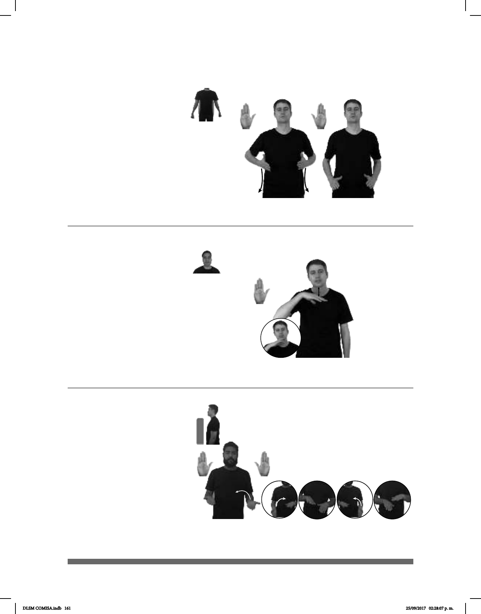

161
(B-P 151)
MAÑANA pos-DIETA pro-YO EMPEZAR
Mañana empieza mi dieta.
Seña: SS
B-P.2
Palmas inician oblicuas
hacia arriba y hacia el centro y terminan
oblicuas hacia abajo y hacia el centro.
Del pecho a la cadera.
Las manos se mueven
formando un arco hacia los lados.
sust. f. Control o
regulación metódica de la cantidad
y el tipo de alimentos que ingiere un
ser vivo; plan alimenticio que sigue
alguien, generalmente por motivos de
salud y bajo la vigilancia de un médico.
1
2
(B-P 152)
______muy
SIEMPRE pro-ÉL DISTRAÍDO
Él siempre está muy distraído.
Seña: SM
B-P.2
Palma hacia abajo.
A la altura del cuello.
La mano se mueve
de arriba hacia abajo repetidamente
1. adj. Que se distrae con
facilidad, que generalmente no se da
cuenta de lo que sucede a su alrede-
dor, de lo que hace o de lo que dice.
2. v. tr. Hacer que una persona o un
animal quite o aparte su atención de
aquello en la que la tiene puesta.
(B-P 153)
HOY CARTAS pro-YO DOBLAR
Hoy aprendí a doblar cartas.
Seña: SB
MD y MB B-P.2
MD y MB las palmas
inician hacia arriba y terminan hacia
abajo.
MD a la altura de la
cintura, del lado derecho al centro. MB
a la altura de la cintura del lado
izquierdo al centro.
La MD y la MB se
mueven formando un arco
alternadamente.
v. tr. Poner en contacto una
o más partes con el resto de una misma
cosa, como tela, un papel u otro
DLSM COMISA.indb 161 25/09/2017 02:28:07 p. m.